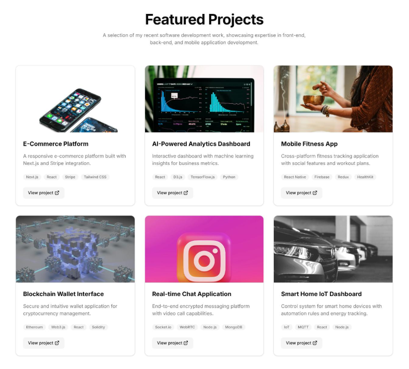

Hello, my name is Ian Peláez Alcaraz. I am a passionate computer engineer with a strong interest in technology, software development, and programming.
Specialized in Artificial Intelligence, Machine Learning, and Distributed Systems.
Studied cloud computing, software architecture, and scalable applications.
Studied algorithms, data structures, and software engineering principles.
Developed problem-solving and analytical thinking skills.
Completed projects involving software engineering, database design, and system programming.
Developed a backend system for managing subscriptions, payment processing, and financial transactions. Implemented secure payment workflows, automated retry mechanisms for failed transactions, and reliable transaction tracking. Designed database structures to store customer information, monitor subscription status, and maintain accurate payment records. Focused on improving system reliability, data consistency, and error handling.
Designed and developed a project management platform to streamline collaboration and task assignment. Implemented features for task tracking, deadline management, project progress monitoring, and team communication. Created an intuitive interface that allows users to organize projects, assign responsibilities, and prioritize tasks efficiently. Integrated data management functionality to keep project information organized and up to date.
Designed and developed a personal portfolio website to showcase projects, technical skills, and professional experience. Built a responsive layout compatible with different screen sizes and devices. Implemented interactive navigation, structured content sections, and reusable styling components to improve usability. Optimized page performance and maintained a consistent visual design to provide a clear and accessible user experience.

Python
Java
C
C++
C#
HTML
CSS
JavaScript
TypeScript
React
Node.js
PHP
SQL
MySQL
PostgreSQL
MongoDB
Git
GitHub
Linux
Rest API
Email: u6103240@campus.udg.edu
Telephone: +34 123 456 789
Address: 123 Emili Grahit, Girona, Spain